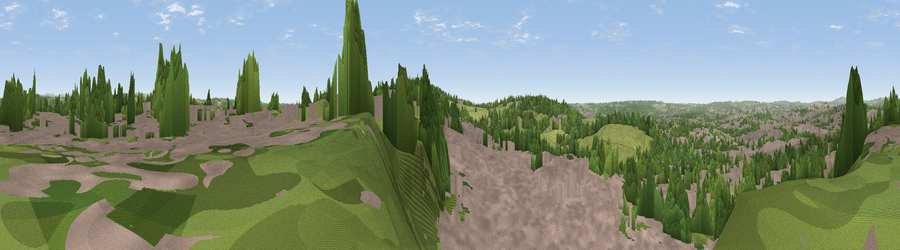

Viewpoint near Meir Heath
#28299 in England · top 43% of its area beats it · near Meir HeathThe view, rendered

A 360° render of this exact spot computed from the terrain model, tree cover and land cover — summer colours, afternoon light, calibrated against photographs of famous viewpoints. Real trees, hedges and buildings will differ in detail.
The panorama
Grey silhouette: terrain skyline in each direction (720 bearings, Earth curvature and refraction included). Dashed green: skyline with trees (+15 m) and buildings (+8 m) as obstacles. Blue strip: how far the ground is visible on each bearing.
Where the view opens
Wedge length = distance to the farthest visible ground on that bearing (vegetation-aware). Rings at 10, 25 and 50 km.
What fills the view
54% built-up · 24% woodland · 21% grassland ·
Angular shares of the visible panorama (visual magnitude), not map area. Landscape diversity 0.45 (0–1 Shannon).
Key numbers
More beautiful places nearby
The staircase of upgrades: each row has a higher view potential than everything closer. Driving times are estimates from straight-line distance, calibrated against real road routing — check an actual route before setting out.
| Place | Direction | Drive | Score |
|---|---|---|---|
| Viewpoint near Meir Heath | SSE · 1 km | ~3 min | 54.7 |
| Viewpoint near Werrington | N · 6 km | ~13 min | 56.3 |
| Viewpoint near Bagnall | N · 8 km | ~16 min | 57.0 |
| Viewpoint near Beech | WSW · 8 km | ~16 min | 62.1 |
| Viewpoint near Beech | WSW · 8 km | ~16 min | 63.7 |
| Viewpoint near Brown Edge | N · 12 km | ~23 min | 65.2 |
| Viewpoint near Madeley Heath | WNW · 14 km | ~25 min | 65.4 |
| Bignall Hill | NW · 14 km | ~25 min | 75.2 |
52.97372, -2.11276 · source: screening · position refined by local search. Computed location — check access rights before visiting.